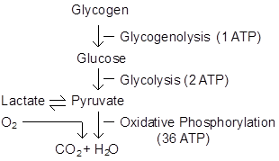
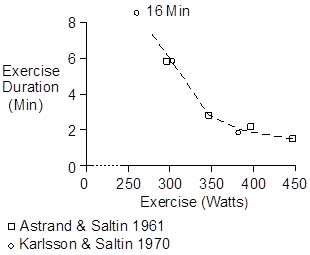

![](../../../Back.PNG"></a>
<p> Exercise > Anaerobic Metabolism
<p>
The main steps in the metabolism of glycogen are illustrated below. With
an adequate O2 supply, glycogen is metabolized all the way to CO2 and H2O.
When the oxygen supply is fully utilized, additional energy is released by
metabolizing glycogen to pyruvate and lactate.
<p>
Note that anaerobic glycogen metabolism is only 8% as effective as aerobic
glycogen metabolism.
<p>
<p>
An the intensity of exercise increases, ventilation and cardiac output
increase to deliver enough oxygen to support aerobic metabolism. But
at some point, cardiac output hits its maximum value. Any increase in
exercise intensity beyond this point is supported by anaerobic metabolism.
<p>
Anaerobic metabolism consumes lots of glycogen and produces lots of lactate.
Thus, two of the main features of anaerobic metabolism are glycogen
depletion and lactic acidosis. See Glycogen and Lactic Acid.
<p>
Anaerobic metabolism can be maintained only for short periods as shown below.
<p>
<p><img src=) References
References
Åstrand, P.-O. and B. Saltin. Oxygen uptake during the first minutes of heavy muscular exercise. J. Appl. Physiol. 16:971-976, 1961.
Karlsson, J. and B. Saltin. Lactate, ATP, and CP in working muscles during exhaustive exercise in man. J. Appl. Physiol. 29:598-602, 1970.